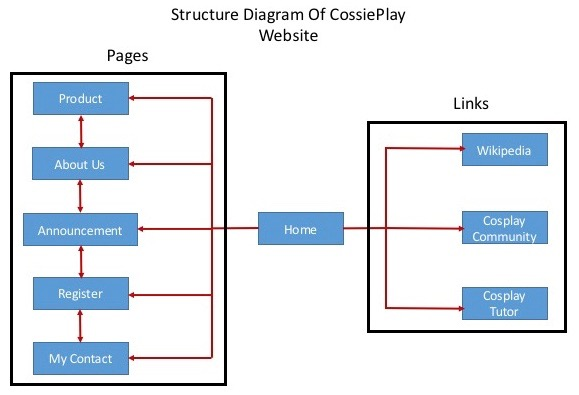

Name: jc335234
Login: Sangkareang85
The goals of this project is to attract more ne people or customers coming weekly to the parties and getting costumes. An attractive website which is published on the Internet with appropriate features is designed to be more accessible. The CossiePlay site has six main menus such as home, product, about us, announcement, register, and my contact. Hopefully, the feature can accommodate what customers needs. In addition, the website is able to promote this start-up to be more popular.
There are some problems faced on creating this website. First of all, the pages of CossiePlay website are not really responsive site. Because this website is designed using a standard tool called PhpStorm. In fact, I have to acknowledge some complex coding activities to create the responsive CossiePlay website. Furthermore, this website can not store basic information of member information, such as name, phone numbers, etc. This is mainly because the website is not connected with a database.
The majority of customers in CossiePlay are old people aged over 35 years old. Therefore, this website focuses on attracting younger audiences, including high school kids and young adults.

Halil Akhyar https://github.com/halilakhyar/CossiePlay